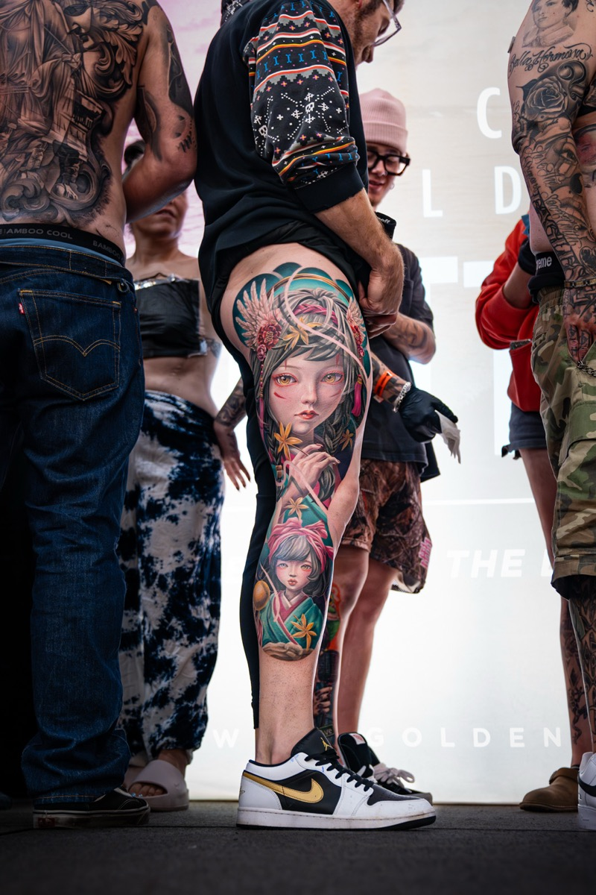

An artist-owned tattoo studio in San Antonio, with an award-winning team doing custom tattoos, piercings, and tattoo removal since 2023.
Artist-Owned Tattoo Studio in San Antonio
Hyper Inkers is a tattoo studio in San Antonio, established in July 2023, built by young hearts full of enthusiasm and creativity. Our artists create custom tattoos, piercings, and tattoo removal, backed by advanced techniques and high-quality equipment. These are the core values that drive us to continuously improve and grow every single day.
Our Mission
As life becomes more modern and perspectives on art, especially tattoos, continue to evolve, Hyper Inkers stays open-minded and always learning. We embrace the changes of the times to bring our clients the best experience possible. Every piece we create is meant to be a vivid, personal expression of you. We want you to feel pure joy and confidence when you leave our studio, knowing that the mark on your skin truly means something. We're committed to doing it all in the safest, most skilled, and most heartfelt way.
Our Vision
At Hyper Inkers, we're more than just a studio. We dream of creating a space that feels like a second home, somewhere you can stop by, even if it's just to say hi or share a laugh, like visiting a friend. We believe in connection, between artists, between artists and clients, and within a community that genuinely loves tattoos and body art. Because to us, art has no limits. And as we continue growing, we carry the strength of everyone who supports us. You are not just our clients, you are part of the Hyper Inkers family, and together we'll keep creating something truly meaningful.
The Hyper Inkers Story Since 2023
Hyper Inkers opened in San Antonio in July 2023, started by working artists who wanted a shop of their own, with a simple idea: treat every tattoo like a masterpiece, and every client like family.
2023
Hyper Inkers opens. Artist-owned from day one. Founder Minh Pham earns his first international titles, including Best of Show at Expo Tattoo Arte Mexico.
2024

The wins multiply. Best of Show titles across the U.S. and Asia, and a first trip to Europe.
2025
Home-turf glory. Minh wins Best of Show at the San Antonio Tattoo Arts Festival; newer artists Tai and Navei take home their first convention trophies.
2026
New York honors. Minh earns Best of Show at the New York Empire State Tattoo Expo.
Today
All under one roof. Tattoos, piercings, and tattoo removal, backed by 40+ trophies and thousands of five-star reviews.
Meet Our Founder
Hyper Inkers was founded by Minh Pham, who started tattooing in Vietnam at sixteen and has been at it for more than ten years. He studied graphic design first, and that training still shows in his black and grey realism, the style he is best known for, along with color and oriental work. His pieces have won Best of Show at conventions in the U.S., Europe, and Asia, including the San Antonio Tattoo Arts Festival and the New York Empire State Tattoo Expo. Minh still tattoos at the studio every week and holds the team to the same standard.
Our artists exemplify professionalism from start to finish. They prioritize punctuality, transparent pricing, and a positive, respectful experience for every client. Explore our artists' portfolios to see the range of their skills and styles. Each artist has a diverse body of work, showing versatility and a commitment to excellence.
Minh Pham founded Hyper Inkers and leads its black and grey realism work. 25+ convention awards across 8 countries, including 10 Best of Show titles. Best of the Best, Sinners Tattoo Expo Dallas 2025.
View profile
Black & Grey, Realism +2ColorJapanese
Minh
Tai Hoa tattoos black and grey at Hyper Inkers. 1st Place Medium Black and Grey, San Antonio Tattoo Arts Festival 2025. Studied Art at Ly Tu Trong High School in Saigon.
View profile
Black & Grey
Tai Hoa
Mancha tattoos black and grey and blackwork at Hyper Inkers. 1st Place Black and Grey, Managua Tattoo Convention 2023. Best of Day, Edge of Texas Tattoo Expo 2021.
View profile
Black & Grey, Blackwork +1Anime
Mancha
Navei Tran tattoos semi-realism and fine line at Hyper Inkers. 3rd Place Small Black and Grey, Houston Tattoo Arts Festival 2025. Specialized tattoo training in Vietnam.
View profile
Semi-Realism, Fine Line +3Black & GreyAnimeScript
Navei
Z tattoos black and grey anime and dark gothic at Hyper Inkers. The only artist on the team working cybersigilism.
View profile
Black & Grey, Anime +2Dark GothicCybersigilism
Z
Genesis Bisani tattoos fine line at Hyper Inkers. Art and Education, Texas Woman's University. Bloodborne Pathogens certified.
View profile
Fine Line
Genesis
Nicole leads the piercing team at Hyper Inkers and tattoos fine line and blackwork. Trains the studio's piercers. Works fine line in red pigment as well as black.
View profile
Ear, Nose +4NavelTongueFine LineBlackwork
Nicole
Zoe Meints pierces full-time at Hyper Inkers and marks from each client's anatomy rather than a standard placement. CPR and Bloodborne Pathogens certified.
See piercing
Ear, Navel +2EyebrowNostril
Zoe
Hyper Inkers Services at San Antonio Studio
We offer a full spectrum of tattoo, piercing, and tattoo removal services, from custom designs and portraits to cover-ups and laser tattoo removal. Our internationally acclaimed artists blend traditional and modern styles to craft masterful designs, and every tattoo is treated as a one-of-a-kind piece born from passion and dedication.
Custom Tattoos
Custom tattoos at Hyper Inkers turn your idea into an original design, drawn from scratch for your body and placement.
Award-winning artists work in realism, black and grey, color, fine line, Japanese, anime, and portrait styles.
Custom Tattoos
Cover-Up Tattoos
Cover-up tattoos at Hyper Inkers turn old or unwanted ink into new artwork you can feel good wearing.
Your artist starts with a free design consult and can work over many existing tattoos, in black and grey or full color.
Cover-Up Tattoos
Piercing
Piercings at Hyper Inkers give you a clean, precise placement from a trained piercer, with a fresh needle and never a gun.
Piercings run walk-in only, covering ear, nose, navel, and more, with jewelry options and aftercare guidance.
Piercing
Tattoo Removal
Tattoo removal at Hyper Inkers fades unwanted ink over a series of treatments.
Certified laser specialists start with a free assessment and space sessions for steady fading across many ink colors.
Tattoo Removal
Safety & Cleanliness
Your safety comes first at every session. We use single-use needles, sterilize our equipment, and keep strict hygiene standards for tattooing, piercing, and tattoo removal alike. The studio stays clean and comfortable, so you can relax and focus on your new piece.
Awards & Recognition
Our artists have competed in 20+ world conventions across 10+ countries and brought home over 40 trophies. Recent highlights include Best of Show at the New York Empire State Tattoo Expo and the San Antonio Tattoo Arts Festival, plus a Best of the Best title at the Sinners Tattoo Expo in Dallas. Those wins are a solid assurance of the skill and technique behind every piece we create.
3rd Place, Small Black and Grey, 2025 Houston Tattoo Arts Festival, Navei
Won by Navei · Hyper Inkers Artist
20+ World Conventions With Enthusiasm
Our artists actively participate in numerous competitions across various countries, consistently achieving victories that contribute to their undisputed level of skill and technique.
They blend traditional knowledge with a commitment to recognizing and absorbing modern trends, resulting in the unique character and style that defines each artist.
Voted Best Tattoo Shop and Piercing Studio in San Antonio, 2026
Readers of the San Antonio Current voted Hyper Inkers Best Piercing Studio/Tattoo Shop in the 2026 Best of San Antonio awards, published July 22, 2026. Best of San Antonio is a citywide readers’ poll now in its 36th year, run across more than 150 categories, with nominations opening in February and voting closing in June. Hyper Inkers won the category in its third year open on Callaghan Road.
Hyper Inkers is one of the top-rated tattoo shops in San Antonio, and the same reasons repeat across 3,000+ reviews. Clients point to custom pieces that match the idea they walked in with, walk-ins that move quickly even on busy nights, and piercers who keep first-timers and kids calm. We aim to make every visit feel easy and unhurried, whether it is a first piercing or a full sleeve, so you leave with work you are proud to wear. The written reviews are below, and many clients tell their story on video.
Feb 9th 2nd tattoo Dragon, Temple with Samurai and Mountains. Navei is RIDICULOUSLY IMPRESSIVE. I came back for a second time with a bigger project and she once again exceeded expectations. If you have dark skin like me and want big Japanese style or anime stuff... she will get the job done and make your dream and your vision come true with her great creativity... 1rst tattoo Shenron Dragon Navei killed it. She not only exceeded my expectations but she applied her own creativity. I have dark skin and she took great care of me and the detail of this project.
CBCarmendy Burhans★★★★★a year ago
I just came here again to get a tattoo. Tai is such an amazing artist, so great to work with. I'll definitely keep coming back here! (previous) I walked in and got two lobes, two helix, and a nose piercing. I only had to wait for about 20 ish minutes and it was pretty busy. All of the staff were super sweet and helpful. Overall amazing experience.
KJKatie Janson★★★★★5 months ago
Such a great tattoo shop! All the artists are super talented and friendly. Navei did a great job on my hand tattoo. Her fine line work and symmetry is impressive. I would definitely recommend her to anyone!
SFSelina Falcon★★★★★2 years ago
I got 4 piercings done. Daith, helix & double conch and it was so quick & looks so good. She knew exactly where to place it to make it pop. 🙌🏽 I love the gold jewelry I got and for only $10 a piercing, LET ME TELL YOUU, ITS SO WORTH IT.
RRaven★★★★★4 months ago
amazing deals, super kind and friendly staff. i got a tattoo from Tai and he knocked it out of the park. the details and depth are immaculate
NWNik W★★★★★4 months ago
Super clean shop, dope interior. Zoe did my nose piercing and made sure it was proportionate and that I was super happy w the placement. She made me comfortable and I'm 100% gonna return to hyperinkerz for my next piercing.
EREm Rose★★★★★a year ago
I got two piercings for the 10 dollars deals on Thursday and they were done so well! The helix i got didn't hurt at all, much less than the first one that i got done and the stacked lobe i got barely hurt as well! I will definitely be coming back for more piercings once these are healed!
RERicardo Elizondo★★★★★a month ago
Really great experience. Super cool, non judgmental staff. I had a funny request of a tattoo and the artist, Nevi (hope I spelled that right), was more than eager to oblige. Very clean facility, very chill vibe.
Zoey was so patient with my 10 year old daughter getting her ears pierced after a bad experience previously!! She helped her feel confident and calm through out. I really appreciated her time.
Expert piercingAmazing results
MMMelissa Maldonado-Varela★★★★★27 Sep 2025
The staff was amazing and the process was super fast! we got the belly piercing and my daughter barely felt any pain! Everything was clean and sanitized! we are definitely coming back!
LSLuke Sterling★★★★★23 Aug 2025
This was a great experience to get my nose in usually terrified of needles but she made it really quick and simple
AGAkeelah Givens★★★★★12 Oct 2025
My experience was very good, very polite and good with their work, definitely recommend
AYAnitta Yebra★★★★★8 Oct 2025
What a Amazing atmosphere & Excellent Customer service… Highly recommend Coming here ☺️